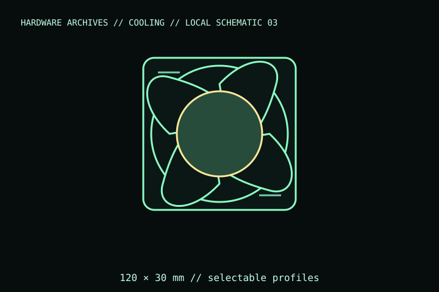

[ INDIVIDUAL COMPONENT // COOLING ]
Phanteks T30-120
A 120 mm radiator/case fan with an unusually thick 30 mm frame and a physical selector for three PWM speed profiles. Its frame depth and switch are central to fit and setup.

IDENTIFICATION: Match the complete model name, suffix, article number, bundle, revision, and host manual to the physical label before installation. Similar product names and variants may use different wiring or dimensions.
Specifications
| Catalog subcategory | Case and radiator fans |
|---|---|
| Exact model | Phanteks T30-120 |
| Frame and thickness | 120 × 120 × 30 mm |
| Control | 4-pin PWM; profile selector: up to 1,200, 2,000, or 3,000 rpm |
| Electrical connection | 12 V rated fan supply; 4-pin PWM lead; no lighting lead on this fan |
| Mount / host fit | 120 mm hole pattern; 30 mm frame is 5 mm thicker than a standard 25 mm fan. |
Compatibility, installation & service
- Check for 30 mm fan depth at the case, radiator, side panel, and cable path; standard 25 mm fan screws may be unsuitable.
- Set the physical speed-profile switch before installation and verify the fan’s PWM/tach response on the chosen header.
- Keep the high-speed profile within the system’s electrical and acoustic operating requirements; do not daisy-chain beyond the controller rating.
Service notes
Power off before cleaning or changing the profile selector. Clear dust from the switch and blades without forcing the rotor; inspect the cable and frame before reuse.
Manufacturer references
- Phanteks — T30-120Manufacturer page lists the 30 mm frame, selectable PWM profiles, connector, and model details.
- Phanteks — Warranty and supportManufacturer support reference.
Verify fit, wiring, and ratings against the manufacturer document for the exact unit and host. This catalog record is an identification aid, not a compatibility guarantee.